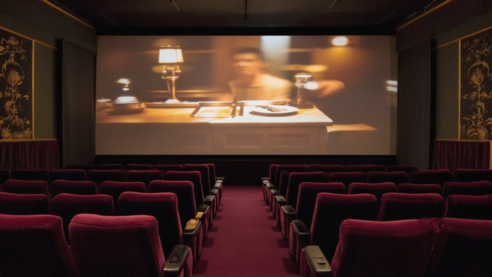
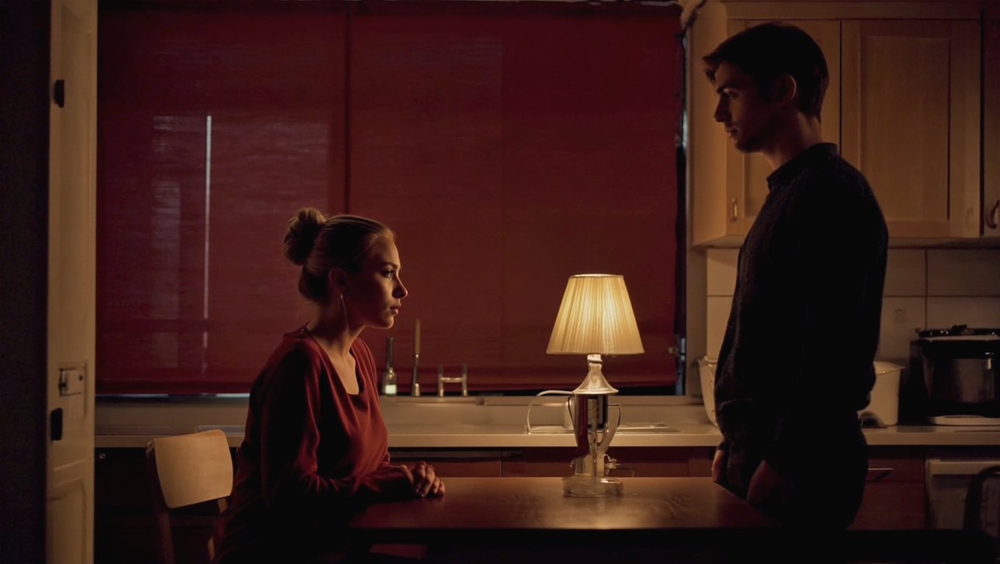
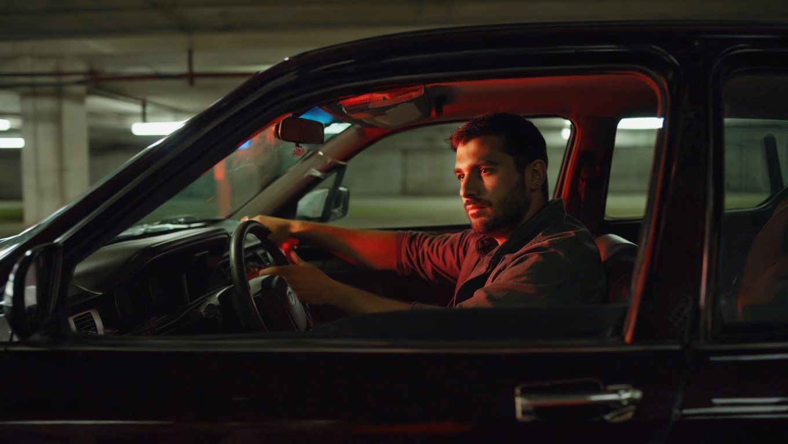
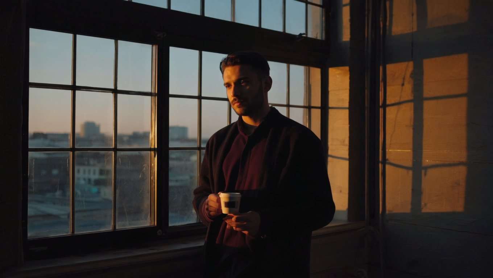
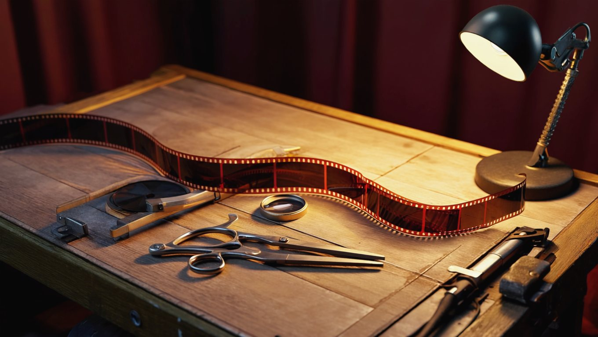

Издание школы·Выпуск I · первое издание·Москва·Ирина и Алексей Чижовы
Для тех, у кого всё повторяется
Кто пишет сценарий твоей жизни
Разговор ещё впереди, а ты уже знаешь, чем он кончится. Твоя реплика, его ответ, хлопок двери: всё по написанному. Ниже разберём, кто это написал.
Дочитай до конца. Развидеть это уже не получится

Кинозал на одного · Сеанс началсяТвоё кино
Это кино ты смотришь каждый вечер. Сегодня разберём, кто его снял.
Часть I
Вспомни последнюю ссору по знакомому кругу
Четыре сцены, в которых ты, скорее всего, уже жил
Не абстрактно. Конкретную. Кухня или машина, вечер, усталость. Одна фраза цепляет другую, и вот вы уже там же, где были в прошлый раз. И в позапрошлый.
Страннее самого повтора другое: ты почувствовал его заранее. Внутри что-то успело шепнуть «сейчас начнётся», и началось. Сцена отыграла себя сама, а тебе досталась роль, которую ты не выбирал.
Если бы это касалось только ссор. Присмотрись, тот же повтор идёт по всем главным линиям жизни:
ДеньгиЛучший месяц, следом провальный. Доход годами у одной цифры.
БлизостьЛюди другие, финал знакомый: обиды, паузы, холод.
Ты самПаркинг, двигатель заглушен. Выходить не хочется.
УтроБудильник, гонка, вечер в телефон. Повтор. Год.

Сцена I · Кухня, 19:19Повтор
Оба знают эту паузу наизусть. Сейчас кто-то скажет реплику, и кино поедет по знакомой колее.
Хроника · Семь минут одного вечера
Обычный вопрос про планы на выходные. Пока просто разговор.
В ответе слышится «опять ты решил за нас». Плечи уже напряглись.
Реплика, сказанная тем самым тоном. Ты его не выбирал, он включился сам.
Встречный упрёк из прошлого месяца. Спор уже не о выходных.
Голоса громче, аргументы старше. Оба говорят дословно то же, что в прошлый раз.
Дверь. Тишина. Чайник остывает.
Ты сидишь и прокручиваешь. Семь минут, и всё по написанному. Кто это написал?
Ты смотрел кино, которое уже видел, и не смог выключить. В деньгах, в близости, в самом себе крутится одна и та же плёнка.
Узнал хотя бы одну сцену? Тогда у меня к тебе вопрос, с которого всё начинается: если ты каждый раз решаешь по-новому, почему получается одно и то же?

Сцена II · Паркинг, 21:47Ты сам
Дела закрыты, все получили своё. Выходить из машины не хочется.
Часть II
Сложа руки ты не сидел. В том-то и дело
Инвентаризация: пять честных попыток и причина, по которой они буксовали
КнигиПонятнее. Понимание осталось на полке.
ПсихологЛегче говорить. Проблема слушала и не уходила.
РазговорНовый тон держался три дня. Старая интонация вернулась сама.
ПеременыПартнёр, работа, город. В новых декорациях та же пьеса.
ВоляХватало до первого триггера. Дальше руки разжимались.
Напрашивается вывод: «со мной что-то не так». Он неверный. Бил ты точно, просто мимо этажа. Всё перечисленное работает со словами и пониманием. А то, что запускает твои повторы, живёт ниже слов. Сейчас покажу.
Часть III
Старая запись
Механика повтора: от события до знакомого финала за двенадцать миллисекунд
Когда-то давно, чаще всего в детстве, с тобой случилось событие. Ты пережил его с сильной эмоцией и прямо там, не советуясь с тобой взрослым, принял решение: «злиться опасно», «просить стыдно», «любовь надо заслужить», «богатые плохие», «я сам, на других надежды нет».
Решение записалось: в тело, в реакции, в интонацию, с которой ты сегодня отвечаешь жене, партнёру, сыну, инвестору. Психологи зовут это сценарием. Мы в школе зовём проще: старая запись.
Как звучит запись изнутри
«Не высовывайся, целее будешь»
«Сначала заслужи, потом попросишь»
«Покажешь слабость, ударят»
«Большие деньги портят людей»
«Сам справлюсь, помощь для слабых»
«Захочешь слишком сильно, потеряешь»
Узнаёшь интонацию? Она не твоя. Так говорил кто-то из взрослых твоего детства, а ребёнок записал дословно. И вот что важно понять про запись: она не враг. Когда-то она защитила маленького тебя, это была лучшая стратегия из доступных. Просто ты вырос, а стратегия нет.
1Событиеслово, взгляд, цифра на счёте
2Эмоциятело вспыхивает раньше мысли
3Решениевключается то самое, давнее
4Действиепоступок из старой записи
Самое неприятное в этой петле то, что она быстрее тебя. Нейробиолог Джозеф ЛеДу показал: сигнал угрозы доходит до миндалины, аварийного центра мозга, за двенадцать миллисекунд. Осмысленная, думающая кора получает его позже и уже подкрашенным. Дэниел Гоулман назвал это захватом: в момент вспышки разумная часть буквально приглушается.
Запись не спорит с тобой. Она просто успевает раньше. Поэтому «взять себя в руки» не срабатывает: к моменту, когда ты вспомнил про руки, реплика уже сказана.
Эксперимент · 30 секунд
Вспомни последнюю вспышку и найди её в теле: где она началась? Сжатая челюсть, горячая грудь, ком в горле, холод в животе. Запомни это место. Это адрес, по которому живёт твоя запись, и по этому адресу мы работаем.
12 мсфора миндалины перед думающей корой (ЛеДу)
90 секживёт химия эмоции, если её не кормить мыслями (Болте Тейлор)
1 решениедетское, способно вести взрослую жизнь десятилетиями
Сплошная линия: волна поднимается и спадает сама, примерно за 90 секундПунктир: новая волна, если крутить мысли по кругу
Механика · Старая записьПлёнка
Увидеть запись мало: она живёт в теле и эмоции. Её перепроживают заново.
Часть IV
Четыре способа жить по записи
Найди свою дорожку: четыре самых частых записи наших групп
Запись у каждого своя, но крутится она по похожим дорожкам. Читай и отмечай, где кольнуло.
Роль I
Тот, кто тянет всё сам
Просить запрещено записью. Помощь равна слабости. Вокруг люди, а опереться не на кого, потому что ты сам никого не подпустил. Усталость копится годами и зовётся «нормальным ритмом».
Роль II
Та, что живёт в ожидании
Всем всё дала: дому, детям, его делу. Своё «потом» откладывается двадцать лет. Внутри тихий вопрос «а когда я?», и за него сразу стыдно.
Роль III
Партнёры-соседи
Быт отлажен, календарь общий, разговоры про логистику. Не ссоритесь, потому что незачем. Близость ушла так тихо, что никто не заметил дату.
Роль IV
Успешный снаружи
Бизнес, статус, спортзал, всё по списку. Внутри пусто и тревожно, и чем громче успех, тем страшнее, что «раскроют». Об этом не знает никто. Иногда даже ты.
Похоже на характер, правда? Только вот характер приходится терпеть. Запись переписывается.
Часть V
Цена каждого следующего круга
Тарифы повторов: чем платят близость, дело и тело
У повтора есть свойство: он дорожает. Первый круг стоит испорченного вечера. Десятый стоит близости: рядом с тобой живут, но уже не открываются. Сотый начинает забирать здоровье, потому что тело годами носит то, что нельзя положить на пол.
Дети выучивают твою запись наизусть, просто глядя на тебя, и уносят её в свои будущие семьи. Дело буксует на том же обороте: расти дальше запись не разрешает, у неё другая инструкция.
История из зала
Предприниматель, чуть за сорок. Пришёл на дне: кассовый разрыв, долги, расставание, друзья отвернулись. Говорит: «хотелось закрыться в коробочку и сидеть одному». На группе долго сопротивлялся, «как баран».
Перелом случился на точке А: признал, где он на самом деле. Увидел свою запись: покупал отношения вместо того, чтобы строить. Дальше пошла перезапись.
Сегодня: «строю настоящие отношения везде, деньги начали приходить, цели выросли кратно, научился играть в долгую». Одной фразой: получил новую версию себя.
И здесь важно сказать главное. Ты не ленивый, не слабый и не сломанный. Двадцать, тридцать, сорок лет ты честно исполняешь решение, принятое ребёнком в плохой день. Ребёнок выбрать не мог. Взрослый может.
«Труднее всего было принять точку А. Признать, где я на самом деле. Дальше всё началось.»
Участник группы, предприниматель

Сцена III · РассветТочка А
Точка А. Утро, в которое врать себе надоело.
Часть VI
Запись нельзя переубедить. Её можно только переписать
Почему слова не достают и что достаёт: психодрама
Теперь понятно, почему книги и разговоры не сработали: они стучались в думающий этаж. Запись хранится этажом ниже, в эмоции и теле. Договариваться с ней словами то же самое, что уговаривать плёнку звучать иначе. Плёнке всё равно, она просто играет, что записано.
Этаж словкниги, разговоры, решения «с понедельника». Сюда стучались прошлые попытки
работа идёт сюда
Этаж эмоции и телаздесь хранится запись. И здесь же её переписывают: в живой сцене
Перезаписывают её там же, где записали: в живой сцене, с живой эмоцией. Для этого сто лет назад психиатр Якоб Морено придумал психодраму: человек не рассказывает о ситуации, а возвращается в неё, проживает заново, видит с позиций других участников и прямо внутри сцены принимает другое решение. Морено называл это спонтанностью: способностью дать новый ответ на старую ситуацию.
Такой опыт невозможно получить из текста. Его можно только прожить. Текст способен на меньшее, но важное: показать тебе твою запись. Что он, надеюсь, уже сделал.

Монтажная · Здесь переписываютПерезапись
Плёнку не уговаривают. Её перемонтируют: кадр за кадром, в живой сцене.
Как выглядит перезапись вживую: сцены, шаги, наука
До двух: запись есть, но пульт чаще у тебя. Три и больше: запись водит тебя по кругу регулярно. От шести: ты читаешь этот текст очень вовремя.
Сейчас
Реакция срабатывает раньше тебя
Близкие получают интонацию, которую ты не выбирал
Деньги упираются в невидимый потолок
Усталость от роли, приросшей к коже
«Всё понимаю» и ничего не меняется
После перезаписи
Между событием и ответом появляется пауза, и в ней ты выбираешь
Трудные разговоры заканчиваются ближе, чем начинались
Решения в деле становятся холоднее и точнее
Просить, отдыхать и опираться на людей разрешено
Своя жизнь на своей стороне стола
Один из наших учеников сказал об этом моменте так: «появилось ощущение, что вижу себя на всей шахматной доске, а не в одной клетке». Мы добавим прозой: жизнь перестаёт случаться с тобой и начинает идти от тебя.
Сцена IV · После перезаписиВыход
Тот же дом, те же двое, другая жизнь.
Вопросы
На этом месте обычно спрашивают
Три вопроса, которые задают чаще остальных
Это разве не у всех так?
Повторы есть у всех, вопрос в цене. Она растёт с каждым кругом, и платят её не деньгами.
Почему я не вижу свою запись, если она моя?
Потому что смотришь из неё. Изнутри сцены собственных шагов не видно, поэтому в зале запись показывают со стороны: глазами других участников.
Можно переписать её самому, по книге?
Увидеть можно, и этот текст для этого написан. Переписать сложнее: запись хранится в эмоции и теле, а туда в одиночку почти не добраться. Нужна сцена и люди в ней.
Где это делают
Школа «Настоящие отношения»
Мы 16 лет ведём людей через перезапись сценариев. Очно, в малых группах от 10 до 20 человек, глубоко. Никаких лекций: работа в живых процессах, включая психодраму, с сопровождением после.
Как работает метод
Сначала виден круг. Событие, эмоция, старое решение, действие. Потом круг идёт заново, быстрее сознания.
Дальше круг ставят на сцене. Ситуацию разыгрывают живьём, с людьми в ролях, и человек впервые видит её со стороны.
И решение переписывают. Прожитым опытом, телом и эмоцией, там же, где записано старое.
Начало всегда одно: собеседование. Честный разговор о твоей ситуации на 15-30 минут: чем школа может помочь и подходит ли она тебе вообще. Для читателей этого гайда собеседование бесплатное.
Запись не берёт выходных
Каждый день, прожитый по ней, делает колею глубже: нейронные дорожки укрепляются от повторения. Поэтому спрашивать «нужно ли с этим что-то делать» уже поздно. Живой вопрос другой: сколько ещё кругов ты готов оплатить.
На странице метода: событийный круг, психодрама по шагам, наука и запись на собеседование.
Последняя страница
Ты дочитал. Это уже кое-что значит
Случайные люди до этой строки не доходят
Если по дороге кольнуло хотя бы раз: на хронике вечера, на одной из четырёх ролей, на признаках из списка, значит, запись ты свою уже увидел. Это была самая трудная часть, и она позади.
Дальше текст бессилен: показать запись он может, переписать нет. Перезапись происходит в живой сцене, и начинается она с разговора. Вот что на нём будет:
Разберём твою ситуацию: что повторяется и чего это уже стоило
Покажем, где в твоём круге живёт старая запись
Честно скажем, поможет ли здесь школа. Если нет, скажем прямо
Заявка на собеседованиеДля читателей гайда бесплатно